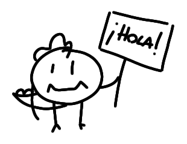
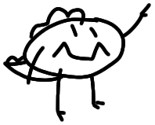
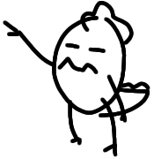

¡Bienvenido!

Desde hace unos años el internet se ha convertido en un lugar más hostil de lo que solía ser, echo de menos poder navegar con completa ineptitud y no ser reprochado por ello. La gente me conoce por algunos nicks o usernames por aquí, pero en su mayoría todos me reconocen como PatataSaurio desde hace ya bastante tiempo.
Si te has encontrado con esta web, felicidades, no se como lo has hecho o quien te la ha pasado pero me alegra ver una cara nueva por aquí. Decidí crear este sitio para tener un lugar donde expresarme sin la fatiga de las redes sociales, un sitio donde compartir lo que sea que se me ocurra por la cabeza con la nostalgia de aquellas webs llenas de gifs de antaño.
¿Que hacer ahora?

Bueno si estás aún leyendo esto significa que he llamado tu atención, esta web se creó a principios de mayo de 2026. A día de hoy no hay mucho pero tienes para cotillear un poco las columnas, suele haber un chat por la parte derecha.

Si te aburre quizás veas algún apartado que te llame la atención en el menú de la izquierda, sinceramente el que más me gusta es el de la galería. También puedes cotillear los posts que tengo en mi blog, ahí encontrarás mis opiniones sobre varios temas que se me pasen por la cabeza, tutoriales o vete tú a saber que habré metido ahí.